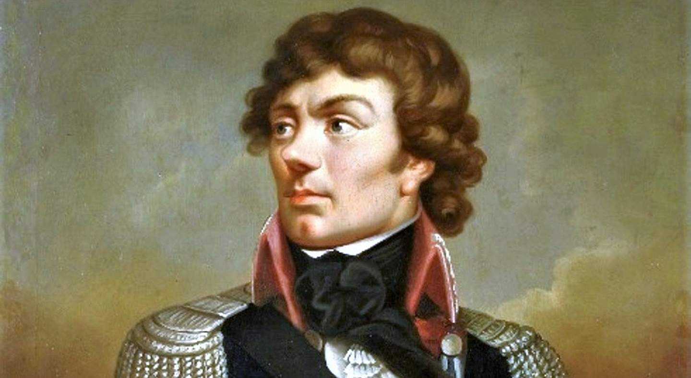
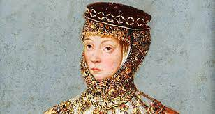
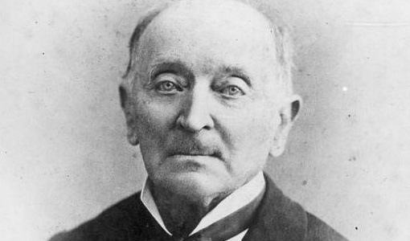
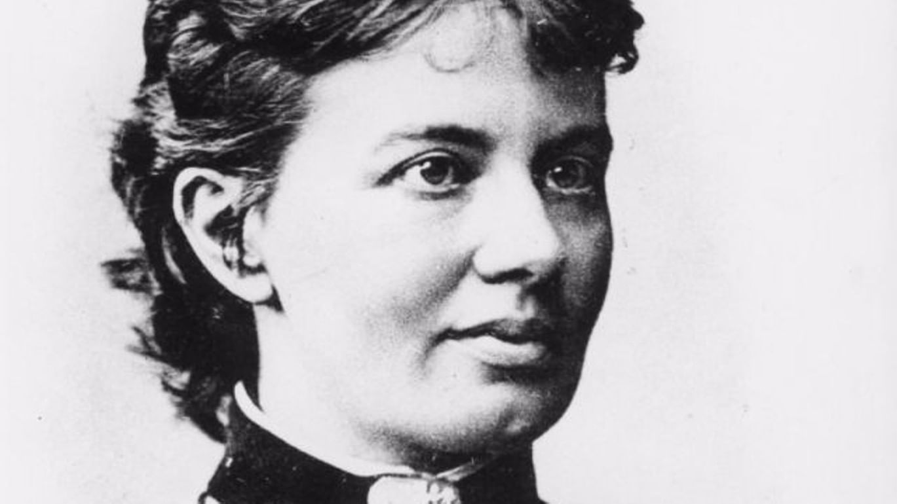
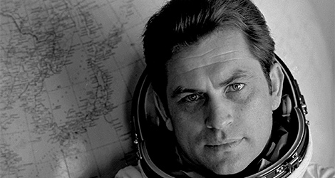
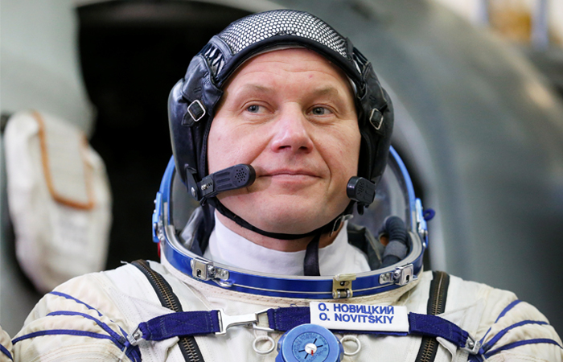
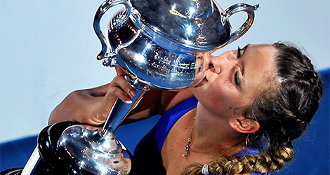
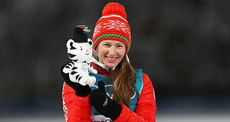

Прошлое и будущее страны — связь поколений
Государственное учреждение образования "Средняя школа №10 г.Пинска"
Исторические личности Беларуси

КОСТЮШКО АНДРЕЙ ТАДЕУШ БОНАВЕНТУРА,
политический и военный деятель Речи Посполитой, руководитель восстания 1794 г.
Национальный герой Беларуси, Польши и США, почетный гражданин Франции.
Родился в 1746 г. в д. Меречевщина Ивацевичского р-на Брестской обл.
В 1776–83 гг. добровольно участвовал в войне за независимость США. В 1784 г. вернулся на родину, с 1789 – в польской армии. В 1794 г. объявлен
главнокомандующим вооруженными силами и начальником восстания 1794 г. В битве под Мацеевице (1794) был тяжело ранен,
попал в плен и заключен в Петропавловскую крепость. После освобождения (1796) выехал в США, в 1798 вернулся в Европу.
Умер в 1817 г. в Швейцарии, перезахоронен в г. Кракове.
БАРБАРА РАДЗИВИЛЛ, дочь Юрия Радзивилла, великого гетмана литовского, королева польская
и великая княгиня ВКЛ, вторая жена Сигизмунда (Жигимонта) II Августа.
Родилась в 1520 г, умерла в 1551 г. через полгода после своей коронации. Похоронена в Виленском кафедральном костеле.
Барбара Радзивилл стала героиней многих легенд, в которых выступает в образе Черной дамы, а истории романтической любви Барбары и Жигимонта посвящены многочисленные художественные произведения.

Известные ученые из Беларуси

ИГНАТ ДОМЕЙКО.
Родился в Беларуси в 1802 году. Был знаменитым геологом, большую часть жизни провел в Чили, где стал национальным героем. За свои достижения официально признан ЮНЕСКО.
СОФЬЯ КОВАЛЕВСКАЯ. Первая в мире женщина-профессор математики происходит из шляхетского белорусского рода. Детство провела в имении Палибино Витебской губернии, а в 18 лет вступила в фиктивный брак, чтобы уехать за границу и заниматься наукой. Труды Ковалевской посвящены математическому анализу, механике, астрономии.

Известные космонавты из Беларуси

ВЛАДИМИР КОВАЛЕНОК. Владимир Васильевич Ковалёнок, космонавт. Родился 3 марта 1942 года в деревне Белое Крупского района Минской области
Генерал-полковник авиации (1993). Дважды Герой Советского Союза (1978, 1981). Герой ГДР (1978). Герой МНР (1981). Летчик-космонавт СССР.
Владимир Ковалёнок один из пионеров освоения космического пространства. Он совершил три полета в космос: первый – в 1977, второй – в 1978, третий – в 1981 году. В общей сложности он провел в космосе 216 суток.
ОЛЕГ НОВИЦКИЙ. Первый белорусский космонавт, возглавивший в 2013 году экипаж 34-й международной экспедиции на МКС. Олег Новицкий родился в 1971 году в г. Червень Минской области. До поступления в отряд космонавтов служил военным летчиком, ветеран боевых действий, награжден медалями Министерства обороны РФ.

Чемпионы из Беларуси

ВИКТОРИЯ АЗАРЕНКО. Знаменитая белорусская теннисистка, победительница крупнейших мировых турниров, олимпийская чемпионка. В январе 2012 года Виктория Азаренко впервые в карьере возглавила рейтинг Женской теннисной ассоциации (WTA). На Олимпиаде-2012 в Лондоне завоевала золото в миксте (в паре с Максимом Мирным) и бронзу в одиночном разряде.
ДАРЬЯ ДОМРАЧЕВА. Четырёхкратная чемпионка, серебряный и бронзовый призёр Олимпийских игр, двукратная чемпионка мира, победительница и призёр этапов Кубка мира, заслуженный мастер спорта, Герой Беларуси. По версии премии Biathlon Award белорусская спортсменка названа лучшей биатлонисткой 2010 года.
